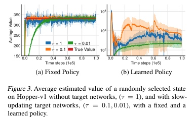
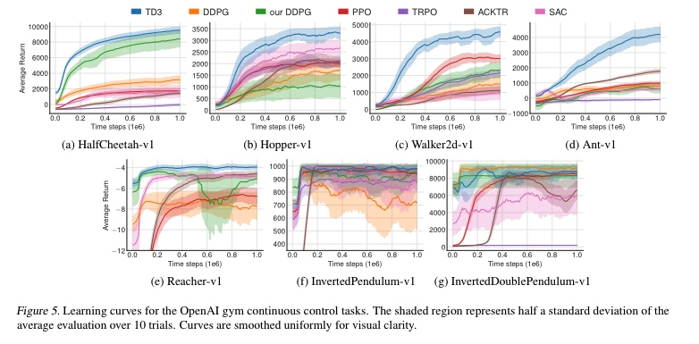

TD3
文章名称为《Addressing Function Approximation Error in Actor-Critic Methods》，在基于值方法的 rl 算法例如 DQN，函数近似误差会导致过估计(double- qlearning 有到)以及次优策略。这个问题在 AC 算法中也是存在的，本文 出了解决这个问题的方法，算法建立在double Q-learning 的基础上，通过两 个 critic 的最小值来限制过估计，并给出了目标网络与高估误差之间的联系， 并建议延迟策略更新以减少每次更新的错误并进一步高性能。
Introduction
在 Double-DQN 中，动作的选择是由 targetnet 的值网络产生而不是由之前的 maxQ 函数，然而在 AC 网络中，这个估计网络和目标网络太相似而不能避免过估 计。DoubleDQN to AC 通过使用 两个独立的训练 critic 网络。虽然这允许更少的偏差值估计，但即使是一个具 有高方差的无偏估计也会导致状态空间局部区域的未来高估，从而对全局策略 产生负面影响。解决方法:出了一个 DoubleQ 变体，它利用了这样一个概念， 即遭受过高估计偏差的值估计值可以用作真实值估计值的近似上界。这有利于低 估，这往往不会在学习期间传播，因为策略避免了低价值估计的操作。
Overestimation Bias
在 Q-learning 中，targetQ 的公式为:
这个目标函数容易被误差所影响，会导致估计值大于真实的最大值，即时初始的零均值误差也会导致值更新，从而导致一致的高估偏差，然后通过贝尔曼方程传播这种偏差。 这种偏差在基于actor-critic的算法中也是存在的。为此，本文介绍一种新颖的 double-Q 变体，它可以在任何 actor-critic 方法中取代 critic。
Clipped Double Q-Learning for Actor-Critic
在 actor-critic 设置中，类似的更新在学习目标中使用当前策略而不是目标策略:
由于更新的缓慢，当前网络和目标网络是太相似的以至于难以做出独立的评估， 此时采取了两个 Q 网路的方法:
文中发现采用两个actor网络并没有对结果产生明显的提升，于是仅用了一个actor网络，本着“宁可低估，也不高估的理念”，修改最后的目标函数为：
Target Networks and Delayed Policy Updates
研究了目标网络和函数逼近误差之间的关系，并证明了使用一个稳定的目标可以 减少误差的增长。如果没有一个固定的目标，每次更新可能会留下残留的错误，这些错误将开始累 积。错误的累积本身可能是有害的，当与一个策略配对时，它可能会导致价值的极大差异。

而更新的价值估计没有目标网络(τ= 1)增加波动性,所有更新速率导致相似的 收敛行为在考虑一个固定的政策。然而，当使用当前值估计训练策略时，使用快 速更新的目标网络会导致高度分散的行为。
如果可以使用目标网络来减少多次更新的错误，并且高错误状态的策略更新会导 致不同的行为，那么策略网络的更新频率应该低于值网络，以便在引入策略更新 之前先将错误最小化。我们建议延迟策略更新，直到值错误尽可能小。修改后， 只更新策略和目标网络后，固定数量的更新到 critic。为了保证 TD-error 保持较小， 缓慢更新目标网络:
通过充分延迟策略更新，限制了相对于未更改的critic重复更新的可能性。 较不频繁发生的策略更新将使用较低方差的值估计，并且在原则上应该导致更高质量的策略更新。即以较高的频率更新价值函数，以较低的频率更新policy。
Target Policy Smoothing Regularization
确定性策略的一个问题是，它们可能会过度拟合到局部最优。当更新critic时，使用确定性策略的学习目标很容易受到函数逼近误差的影响，从而增 加了目标的方差。这种引起的方差可以通过正则化来减少。我们引入了一种用于 深度价值学习的正则化策略——目标策略平滑。
在实践中，我们可以通过在目标策略中添加少量随机噪声并对小批操作进行平均 来近似这个期望。这使我们修改的目标更新:
在这种情况下，值估计是在策略之外学习的，而添加到目标政策中的噪声是独立 于探索策略选择的。
实验结果
